⛔ O risco nº 1 deste card: duas lógicas de logo que discordam na extensão
Medi o código em origin/main e o que o HML serve hoje. Existem
dois caminhos distintos para resolver o arquivo do logotipo, e eles não concordam:
| Caminho | Como resolve o arquivo | Servido hoje no HML |
|---|---|---|
Relatórios — os 19 RDLC + certificadosRelatorioController |
File.Exists(base+".png") ? .png : .jpg→ prefere .png |
LogoKOVR.png = HTTP 20015.552 bytes · PNG 769×120 |
Impressão do protocolo de averbaçãoAverbacaoNacionalController:1209 |
"...\Logo" + idLayout + ".jpg"→ .jpg fixo, sem fallback |
LogoKOVR.jpg = HTTP 404 |
Protocolo se Ind_Logo_Branco ativo |
"...\Logo" + idLayout + "_Branco.png" |
LogoKOVR_Branco.png não existe no repo(o único _Branco.png é o do AIG) |
Consequência prática: trocar o .png resolve os relatórios, mas
trocar o .jpg hoje não muda nada no HML — o arquivo não está sendo servido,
embora exista no repositório. A impressão do protocolo é um dos locais do critério de
aceite, e pode continuar sem o logo novo por deploy, não por código. Isso está registrado
no card e é exatamente o que o CT-MRC-002 e o CT-MRC-005 existem para pegar.
⚠️ O “antes” está contaminado: o nome já foi trocado no banco
Na base smt-hom-citweb-kovr, tb_cad_seg.n_seg já é
KEV SEGUROS S.A. (CNPJ omitido no plano público) — medido em 11/08, antes de o
desenvolvimento concluir — e não há nenhuma linha com “KOVR” nessa coluna. Ao mesmo tempo,
web.KOVR.config segue com infoCliente = KOVR|SQL_SERVER|KOVR
Seguradora|9999|KOVR e os 3 certificados seguem com o texto hardcoded.
Isso é oportunidade e risco ao mesmo tempo. Oportunidade: o estado misto permite
descobrir, antes do deploy, qual saída lê de qual fonte — quem já mostra “KEV” lê do
banco; quem mostra “KOVR Seguradora” lê do infoCliente ou do RDLC. Risco: um CT
ingênuo que só verifica “a tela mostra KEV SEGUROS” passaria pelo motivo errado, sem o
código ter entrado. Por isso o CT-MRC-007 exige comparação antes × depois por
saída.
Dentro: logotipo e nome da seguradora nas saídas listadas na descrição do card — página inicial, impressão do protocolo de averbação, certificado de exportação (frente e verso), certificado RCV, relatórios, impressão da consulta, Resumo de Embarques (Prévia e Fechamento) e Relação de Embarques (Prévia, Fechamento e Relação Simplificada), Nacional e Internacional. Mais a regressão do identificador técnico e a caça-string que o card pede.
Fora: qualquer regra de negócio (o refinamento confirma: “troca cirúrgica, sem mudança
de regra”); a promoção para produção (UPDATE tb_cad_seg em PRD vai por
chamado de infra, e o QA não toca produção); e as configurações fora do repositório
(DsLogoBase64 do NSSEG_CITNET e UrlLogo do Mongo no login) — se
estiverem em uso, entram como escopo novo e viram CT à parte, porque hoje não há como eu
confirmar que estão ativos neste ambiente.
Ramos: a descrição declara “aplicável para todos os ramos” na impressão do protocolo e “Nacional e Internacional” nos relatórios — os CTs cobrem RCV (59), um ramo nacional (54 ou 55) e o internacional (exportação).
1. DoD do desenvolvimento. A execução só começa com as tasks #8088 (logotipo) e #8089 (nome) fora de In Progress e o card em homologação. Hoje (11/08 15:28) as duas estão In Progress — o plano sai antes de propósito, para o aviso do risco nº 1 chegar durante a implementação.
2. Foto pré-deploy por local (obrigatória). Antes do deploy, capturar por superfície:
o logo exibido (com md5 e tamanho do arquivo servido) e o nome exibido. Baseline já
medido em 11/08: LogoKOVR.png = 15.552 bytes · 769×120 · md5 ff9c6ce6…;
LogoKOVR.jpg = 404; tb_cad_seg.n_seg = KEV SEGUROS S.A.;
infoCliente[2] = KOVR Seguradora. Sem essa foto, o CT-MRC-007 não tem
como distinguir código de dado.
3. Massa. Massa RCV medida em 11/08 na base smt-hom-citweb-kovr: apólice 59052026 · filial 1 · ramo 59 · e_avb='D' · 1 condição comercial · vigência 01/07/2026 a 01/07/2027. Massa para relatório medida em 11/08: apólice 59 · filial 1 · subgrupo 1 · competência 202602 = 2.843 averbações RCV. Para os ramos nacionais: ramo 54 (78.875 averbações) e ramo 55 (81.658). Se algum cenário exigir massa que não existe, o QA
cria — falta de massa não bloqueia.
4. Dois ambientes servem logos diferentes. /citnet/ entrega PNG 769×120
(15.552 bytes) e /alfa/citnet/ entrega PNG 769×479 (23.429 bytes). Este plano
testa a raiz /citnet/. Se a marca precisa mudar nos dois, o segundo entra no escopo
de rollout — e isso é decisão de quem conduz a implantação, não do QA.
5. Automação. Não há script cobrindo marca/logo no CITNET. Os CTs aprovados geram script ao final, conforme a metodologia; a comparação de md5 do arquivo servido é automatizável e será a base dele.
Pré-condições
https://kovr-hml-faturamento.nsseg.com.br/citnet/. Credencial: .env → HML_KOVR_ALFA_CITNET_USER / HML_KOVR_ALFA_CITNET_PASS (única chave KOVR do .env; confirmar no primeiro login qual das duas raízes ela abre — ver a nota dos dois ambientes nos pré-requisitos). ⛔ Navegação sempre por clique desde o login — as URLs abaixo servem só para confirmar onde você chegou.A navbar sai de
CitNet2/Views/Shared/_Layout-KOVR.cshtml, que referencia LogoKOVR.png — medido em origin/main. Antes de executar, guardar a foto do estado atual (pré-requisito 2).Passos
- Abrir a URL base e fazer login.
- Na página inicial, localizar o logotipo no topo (navbar).
- Capturar screenshot com o logo legível — não a tela inteira reduzida.
- Confirmar por requisição direta que o arquivo servido mudou: baixar
/citnet/Content/images/LogoKOVR.pnge comparar tamanho e md5 com o baseline pré-deploy (15.552 bytes · PNG 769×120 · md5 ff9c6ce6…, medido em 11/08). - Comparar o logo exibido com o anexo oficial do card (KEV FUNDO BRANCO.jpeg).
Resultado esperado
LogoKOVR.png servido tem md5 diferente do baseline. O md5 é o que separa “trocaram o arquivo” de “o navegador me mostrou o cache”.Evidências
/citnet/ exibe a marca KEV; LogoKOVR.png servido com o conteudo novo (nome do arquivo preservado, conteudo trocado).Ambiente: CITNET KOVR HML
/citnet/ · 13/08/2026
/citnet/ em sessao logada: marca KEV seguros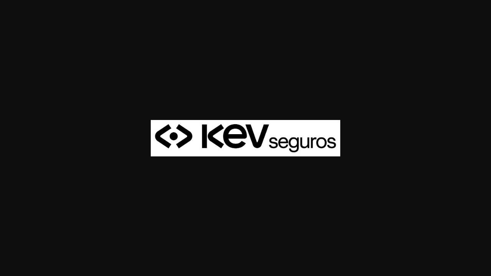
/citnet/Content/images/LogoKOVR.png servido pela raiz: o arquivo mantem o nome tecnico e entrega o conteudo KEV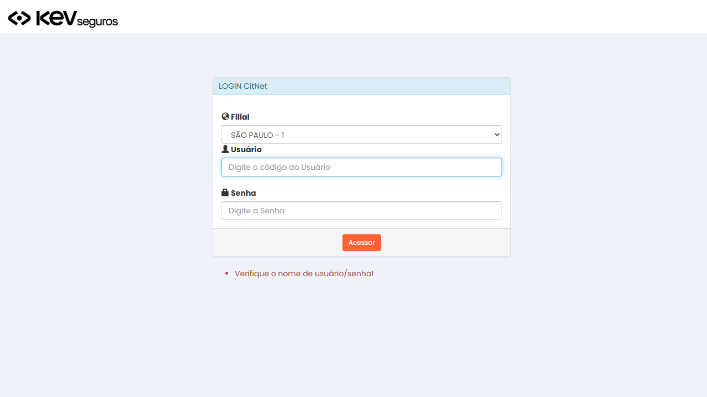
/citnet/ com o logo novo no topo/alfa/citnet/ (o 2º ambiente citado no pre-requisito 4), tambem com a marca KEV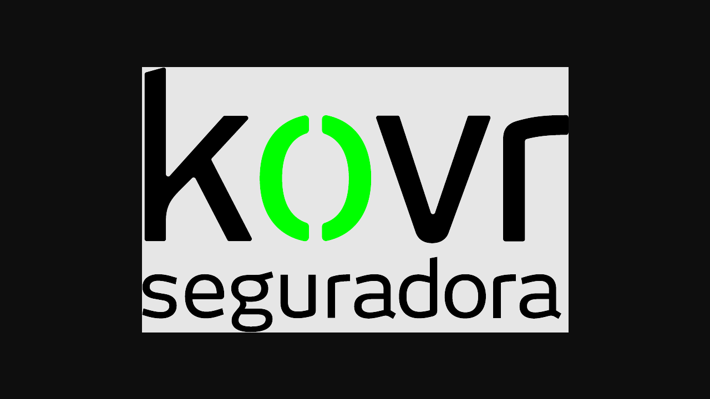
LogoKOVR.png servido pela raiz /alfa/citnet/ (dimensao diferente da raiz, mesmo conteudo KEV)Tipo
Positivo · o caminho mais simples, e o único que não depende de RDLC
Pré-condições
https://kovr-hml-faturamento.nsseg.com.br/citnet/. Credencial: .env → HML_KOVR_ALFA_CITNET_USER / HML_KOVR_ALFA_CITNET_PASS (única chave KOVR do .env; confirmar no primeiro login qual das duas raízes ela abre — ver a nota dos dois ambientes nos pré-requisitos). ⛔ Navegação sempre por clique desde o login — as URLs abaixo servem só para confirmar onde você chegou.Massa RCV medida em 11/08 na base
smt-hom-citweb-kovr: apólice 59052026 · filial 1 · ramo 59 · e_avb='D' · 1 condição comercial · vigência 01/07/2026 a 01/07/2027.⛔ Este é o CT de maior risco do card. Medido em
origin/main: AverbacaoNacionalController linha 1209 monta o caminho como "...\Content\images\Logo" + idLayout + ".jpg" — extensão fixa, sem fallback —, enquanto o RelatorioController prefere .png. E o LogoKOVR.jpg responde HTTP 404 no HML (medido em 11/08), embora exista no repo.Passos
- Menu Averbações → escolher um ramo (ex.: RCV).
- Preencher e Gravar uma averbação na apólice
59052026/filial 1 (ou abrir uma averbação já existente da mesma apólice, se o CT de criação não for o objetivo). - No fim da página, clicar em Imprimir.
- Capturar o PDF/tela gerado e salvar o arquivo — CT de impressão tem o arquivo como evidência obrigatória, não só o screenshot.
- Verificar qual arquivo o servidor entrega: requisitar
/citnet/Content/images/LogoKOVR.jpgeLogoKOVR_Branco.pnge registrar o HTTP de cada um. - Repetir para mais de um ramo — a descrição do card diz “aplicável para todos os ramos”.
Resultado esperado
⚠️ Se aparecer imagem quebrada, logo antigo ou nenhum logo, isso é REPROVADO e a causa mais provável não é o código: é o
.jpg não estar publicado. Registrar o HTTP dos dois arquivos na evidência, porque é isso que distingue “fix não feito” de “fix feito e não publicado”. Há ainda a variante Logo<seg>_Branco.png, usada quando o indicativo Ind_Logo_Branco está ativo — e LogoKOVR_Branco.png não existe no repositório (o único _Branco.png é o do AIG).Evidências
LogoKOVR.jpg = HTTP 404 no baseline de 11/08) nao se materializou: o .jpg passou a ser servido com o conteudo novo.Ambiente: CITNET KOVR HML
/citnet/ · 13/08/2026
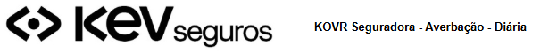
LogoKOVR.jpg servido pela raiz /citnet/: HTTP 200 com conteudo KEV. E o que derruba o risco nº 1 (baseline de 11/08: 404)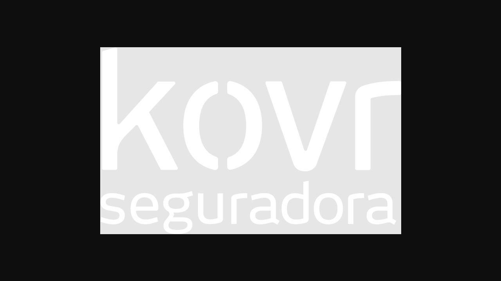
LogoKOVR.jpg servido pela raiz /alfa/citnet/Tipo
Positivo + negativo · o CT que justifica o plano existir
Pré-condições
https://kovr-hml-faturamento.nsseg.com.br/citnet/. Credencial: .env → HML_KOVR_ALFA_CITNET_USER / HML_KOVR_ALFA_CITNET_PASS (única chave KOVR do .env; confirmar no primeiro login qual das duas raízes ela abre — ver a nota dos dois ambientes nos pré-requisitos). ⛔ Navegação sempre por clique desde o login — as URLs abaixo servem só para confirmar onde você chegou.Massa para relatório medida em 11/08: apólice
59 · filial 1 · subgrupo 1 · competência 202602 = 2.843 averbações RCV. Para os ramos nacionais: ramo 54 (78.875 averbações) e ramo 55 (81.658).Medido: os 19 RDLCs de
CitNet2/Reports/KOVR/ que atendem esses relatórios recebem o logo por parâmetro de runtime (<Image Source=External Value='=Parameters!Logo.Value'>), e não por imagem embutida — logo, trocar o arquivo cobre todos de uma vez.Passos
- Menu Relatórios → Fatura Mensal; informar apólice
59/filial1/subgrupo1/competência02/2026. - Selecionar Resumo → Consultar (tela) e Imprimir / PDF (arquivo).
- Voltar e selecionar Relação de Embarques → Consultar → Imprimir / PDF e também Exportar Relação Simplificada.
- Menu Relatórios → Consulta (Averbação), informar a apólice, Consultar → Imprimir.
- Repetir a Relação de Embarques para um ramo nacional (54 ou 55) e para o internacional — a descrição diz “aplicável para o Nacional e Internacional”.
- Salvar cada arquivo gerado e conferir o logo dentro dele.
Resultado esperado
.png × .jpg).<EmbeddedImage Name="logoHDI"> com ~3,2 KB de base64 dentro, resíduo de copy-paste de outra seguradora. Ela não é a imagem exibida (o Image1 aponta para o parâmetro). Não mexer nela — e não trocá-la por engano pensando que é o logo da KOVR.Evidências
Ambiente: CITNET KOVR HML
/citnet/ · 13 e 14/08/2026

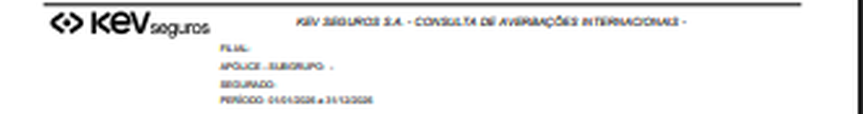
Tipo
Positivo · cobertura ampla por um único ponto de leitura
Pré-condições
https://kovr-hml-faturamento.nsseg.com.br/citnet/. Credencial: .env → HML_KOVR_ALFA_CITNET_USER / HML_KOVR_ALFA_CITNET_PASS (única chave KOVR do .env; confirmar no primeiro login qual das duas raízes ela abre — ver a nota dos dois ambientes nos pré-requisitos). ⛔ Navegação sempre por clique desde o login — as URLs abaixo servem só para confirmar onde você chegou.Os 3 RDLCs de certificado da KOVR são
CertificadoExportacao_KOVR.rdlc, CertificadoExportacaoVerso_KOVR.rdlc e CertificadoIndividualVeiculo_KOVR_RC_V.rdlc — os mesmos três do refinamento técnico. Diferente dos outros 19, eles não têm a EmbeddedImage residual.Passos
- Certificado de exportação: menu Averbações → Internacional → Exportação; gravar uma averbação; clicar em Certificado; preencher o formulário; Gravar; Imprimir. Conferir frente e verso.
- Certificado RCV: menu Relatórios → Consulta (tipo Nacional); informar a apólice; clicar em Gerar Certificado e também em Gerar Todos os Certificados (ZIP).
- Salvar os arquivos (PDF e o ZIP) e conferir o logo dentro de cada um.
- No ZIP, abrir mais de um certificado — a geração em lote passa pelo mesmo RDLC, mas é onde um parâmetro por iteração poderia falhar só em alguns.
Resultado esperado
Evidências
Ambiente: CITNET KOVR HML
/citnet/ · 13 e 14/08/2026
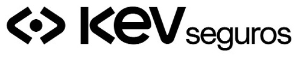
Tipo
Positivo · saída para o cliente final, com maior custo de erro
Pré-condições
https://kovr-hml-faturamento.nsseg.com.br/citnet/. Credencial: .env → HML_KOVR_ALFA_CITNET_USER / HML_KOVR_ALFA_CITNET_PASS (única chave KOVR do .env; confirmar no primeiro login qual das duas raízes ela abre — ver a nota dos dois ambientes nos pré-requisitos). ⛔ Navegação sempre por clique desde o login — as URLs abaixo servem só para confirmar onde você chegou.CT-MRC-001 a 004 executados na mesma sessão, sem intervalo de deploy entre eles.
Passos
- Numa única sessão de navegador, e sem limpar sessão entre os passos: capturar a navbar, gerar a impressão do protocolo, gerar um relatório e gerar um certificado.
- Montar uma tabela lado a lado: superfície × logo exibido (novo/antigo/ausente).
- ⛔ Furar o cache em cada requisição de imagem (query string única ou hard reload) — cache do navegador é a causa clássica de “metade trocou”.
Resultado esperado
Qualquer combinação mista — relatórios novos e protocolo antigo, por exemplo — é REPROVADO e aponta diretamente para a divergência de extensão (
.png preferido pelos relatórios × .jpg fixo no protocolo). É este CT que transforma um detalhe de implementação num resultado observável.Evidências
.png (navbar/relatorios) e .jpg (protocolo) convergem no logo novo.Ambiente: CITNET KOVR HML
/citnet/ · 14/08/2026
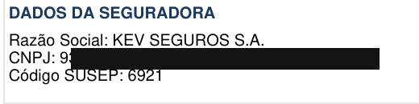
Tipo
Integração · desenhado para pegar o risco nº 1 deste card
Pré-condições
https://kovr-hml-faturamento.nsseg.com.br/citnet/. Credencial: .env → HML_KOVR_ALFA_CITNET_USER / HML_KOVR_ALFA_CITNET_PASS (única chave KOVR do .env; confirmar no primeiro login qual das duas raízes ela abre — ver a nota dos dois ambientes nos pré-requisitos). ⛔ Navegação sempre por clique desde o login — as URLs abaixo servem só para confirmar onde você chegou.⛔ Medido em
origin/main: dos 22 RDLCs de Reports/KOVR/, somente estes 3 têm a string KOVR Seguradora escrita dentro do arquivo (1 ocorrência cada). Os outros 19 têm zero. Ou seja, aqui a troca depende de alterar o RDLC — não sai de configuração.Passos
- Gerar os três certificados pelos caminhos do CT-MRC-004.
- Em cada arquivo salvo, localizar o nome da seguradora e ler o texto exato.
- Registrar o texto obtido literalmente, sem parafrasear.
Resultado esperado
Evidências
Ambiente: CITNET KOVR HML
/citnet/ · 13 e 14/08/2026
Razao Social: KEV SEGUROS S.A. e Codigo SUSEP: 6921. Mesma tela e mesma rodada (14/08) da matriz do CT-MRC-005Tipo
Positivo · o único caminho de nome que exige mexer no RDLC
Pré-condições
https://kovr-hml-faturamento.nsseg.com.br/citnet/. Credencial: .env → HML_KOVR_ALFA_CITNET_USER / HML_KOVR_ALFA_CITNET_PASS (única chave KOVR do .env; confirmar no primeiro login qual das duas raízes ela abre — ver a nota dos dois ambientes nos pré-requisitos). ⛔ Navegação sempre por clique desde o login — as URLs abaixo servem só para confirmar onde você chegou.Massa para relatório medida em 11/08: apólice
59 · filial 1 · subgrupo 1 · competência 202602 = 2.843 averbações RCV. Para os ramos nacionais: ramo 54 (78.875 averbações) e ramo 55 (81.658).Os 19 RDLCs restantes recebem o nome por parâmetro/dataset. As duas fontes possíveis foram medidas em 11/08 e discordam entre si:
tb_cad_seg.n_seg na base da KOVR já é KEV SEGUROS S.A. (CNPJ omitido no plano público), enquanto web.KOVR.config ainda tem infoCliente = KOVR|SQL_SERVER|KOVR Seguradora|9999|KOVR.Passos
- Gerar Resumo de Embarques, Relação de Embarques (Nacional e Internacional), Relação Simplificada e Impressão da Consulta, pelos caminhos do CT-MRC-003.
- Em cada saída, ler o nome exibido e anotar qual dos dois textos apareceu.
- Cruzar com a foto pré-deploy: a saída que já exibia “KEV” antes da entrega lê do banco; a que exibia “KOVR Seguradora” lê do
infoClienteou do RDLC. - Conferir o valor de
tb_cad_seg.n_segno banco no momento do teste, para não atribuir ao código uma mudança que veio de dados.
Resultado esperado
⛔ Anti-falso-positivo obrigatório: “a tela mostra KEV” não prova que a entrega funcionou, porque o banco já estava trocado antes de o desenvolvimento terminar. O que aprova este CT é a comparação antes × depois por saída, não o texto final isolado.
Evidências
KOVR Seguradora; 14/08 (pos-fix #8121) exibe KEV SEGUROS S.A. — o anti-falso-positivo que o CT exige.Ambiente: CITNET KOVR HML
/citnet/ · 13 (antes) e 14/08/2026 (depois)
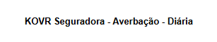
KOVR Seguradora - Averbacao - Diaria, o valor do infoCliente indice 2 nao migrado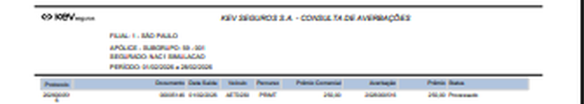
KEV SEGUROS S.A. - CONSULTA DE AVERBACOES no relatorio Nacional. Comparado ao EV1, e a mudanca por saida que o CT exige — nao o texto final isolado
KEV SEGUROS S.A. - CONSULTA DE AVERBACOES INTERNACIONAIS - ExportacaoTipo
Positivo · e o CT que mais facilmente passaria pelo motivo errado
Pré-condições
https://kovr-hml-faturamento.nsseg.com.br/citnet/. Credencial: .env → HML_KOVR_ALFA_CITNET_USER / HML_KOVR_ALFA_CITNET_PASS (única chave KOVR do .env; confirmar no primeiro login qual das duas raízes ela abre — ver a nota dos dois ambientes nos pré-requisitos). ⛔ Navegação sempre por clique desde o login — as URLs abaixo servem só para confirmar onde você chegou.Valor atual medido:
KOVR|SQL_SERVER|KOVR Seguradora|9999|KOVR. O refinamento técnico altera o índice 2 e mantém Empresa=KOVR e o CodigoSeguradora.Passos
- Após o deploy, identificar uma saída que comprovadamente lê do
infoCliente(definida no CT-MRC-007) e conferir o nome exibido. - Confirmar que somente o índice 2 mudou: os índices 0 e 4 devem continuar
KOVR(é isso que o CT-MRC-009 protege). - Se houver tela administrativa que exiba a razão social vinda de configuração, conferir lá também.
Resultado esperado
infoCliente passa a exibir KEV SEGUROS S.A., e os demais campos do infoCliente permanecem inalterados.Evidências
infoCliente indice 2 e o que a aplicacao resolve em runtime: document.title passou de KOVR Seguradora- CitNet para KEV SEGUROS S.A.- CitNet. Indices 0 e 4 permanecem KOVR (identificador tecnico).Ambiente: CITNET KOVR HML
/citnet/ · 14/08/2026

document.title = 'KEV SEGUROS S.A.- CitNet' (pos-fix). A anotacao registra o valor pre-fix ('KOVR Seguradora- CitNet') e que o residual KOVR restante e so identificador tecnico (LogoKOVR.png, CitNet-KOVR.css, layout-kovr.js)Tipo
Positivo + regressão de configuração
Pré-condições
https://kovr-hml-faturamento.nsseg.com.br/citnet/. Credencial: .env → HML_KOVR_ALFA_CITNET_USER / HML_KOVR_ALFA_CITNET_PASS (única chave KOVR do .env; confirmar no primeiro login qual das duas raízes ela abre — ver a nota dos dois ambientes nos pré-requisitos). ⛔ Navegação sempre por clique desde o login — as URLs abaixo servem só para confirmar onde você chegou.⛔ O refinamento técnico é explícito: manter
Empresa=KOVR e o CodigoSeguradora. E há mais coisas que continuam KOVR por natureza: a base smt-hom-citweb-kovr, a URL kovr-hml-faturamento…, o nome dos próprios arquivos (LogoKOVR.png, *_KOVR.rdlc, web.KOVR.config) e o idLayout que resolve o caminho do logo.Passos
- Fazer login normalmente e confirmar que a autenticação funciona.
- Navegar por Averbações, Relatórios e Faturamento e confirmar que as telas carregam (o
idLayouterrado quebraria a resolução do logo e do RDLC). - Gravar uma averbação nova e confirmar que ela persiste — o caminho de gravação passa pelo mesmo
infoCliente. - Conferir no banco que os identificadores não mudaram:
c_seg_ssp/ SUSEP eid_segemtb_cad_seg, e a conexão continuar apontando parasmt-hom-citweb-kovr.
Resultado esperado
id_seg, base e Empresa/CodigoSeguradora inalterados. Uma troca de marca é cirúrgica por definição: se algo funcional mudou, é regressão, não escopo.
Evidências
id_seg = 1 e SUSEP 6921 inalterados, base smt-hom-citweb-kovr mantida, e gravacao funcionando (1 averbacao persistida na apolice 59052026).Ambiente: CITNET KOVR HML
/citnet/ · 13/08/2026
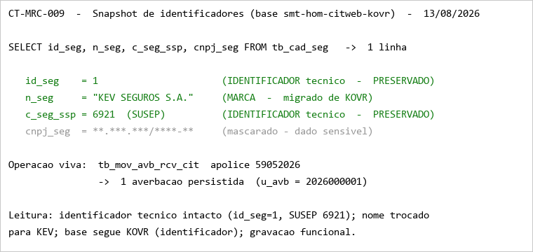
smt-hom-citweb-kovr: id_seg = 1 e c_seg_ssp (SUSEP) = 6921 preservados, n_seg migrado para KEV SEGUROS S.A., e 1 averbacao persistida na apolice 59052026 (u_avb = 2026000001) — gravacao funcionando. CNPJ mascaradoTipo
Regressão · obrigatória (o plano não fecha sem ela)
Pré-condições
https://kovr-hml-faturamento.nsseg.com.br/citnet/. Credencial: .env → HML_KOVR_ALFA_CITNET_USER / HML_KOVR_ALFA_CITNET_PASS (única chave KOVR do .env; confirmar no primeiro login qual das duas raízes ela abre — ver a nota dos dois ambientes nos pré-requisitos). ⛔ Navegação sempre por clique desde o login — as URLs abaixo servem só para confirmar onde você chegou.Todos os arquivos gerados nos CTs anteriores salvos em disco. A própria descrição do card pede a varredura e diz que resíduo não citado “deve ser trago para discussão”.
Passos
- Varrer o texto de cada arquivo salvo (PDF/XLSX/tela) procurando
KOVReKOVR Seguradora. - ⛔ Classificar cada achado antes de reportar, em duas colunas: (a) marca exibida ao usuário → deve ter mudado; (b) identificador técnico (nome de arquivo, URL, nome da base, chave de configuração, código interno) → deve continuar KOVR.
- Para cada achado do tipo (a), registrar o local exato e abrir na discussão que o card pede.
- Repetir a varredura na interface (menus, títulos, rodapé, e-mails se houver), não só nos arquivos.
Resultado esperado
⛔ “Sumiu todo KOVR” seria falso positivo — e reprovaria uma implementação correta. A evidência deste CT é a tabela classificada, não a contagem bruta: sem separar marca de identificador, o resultado não significa nada.
Evidências
KEV SEGUROS S.A. e os identificadores tecnicos seguem KOVR (correto). a1/a2 (cabecalho e corpo da impressao do protocolo) recapturados em 17/08 pela rota propria /citnet/Relatorio/PrintProtocolo (apolice 59052026 / filial 1 / subgrupo 1, u_avb 2026000001) — exibem KEV SEGUROS S.A. no cabecalho E no rodape, zero ocorrencia de KOVR no texto renderizado (regex no DOM: hasKEV=true, hasKOVR=false).Ambiente: CITNET KOVR HML
/citnet/ · 13, 14 e 17/08/2026
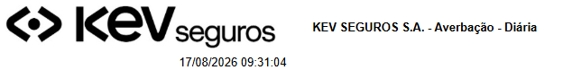
KEV SEGUROS S.A. - Averbacao - Diaria (logo KEV + titulo)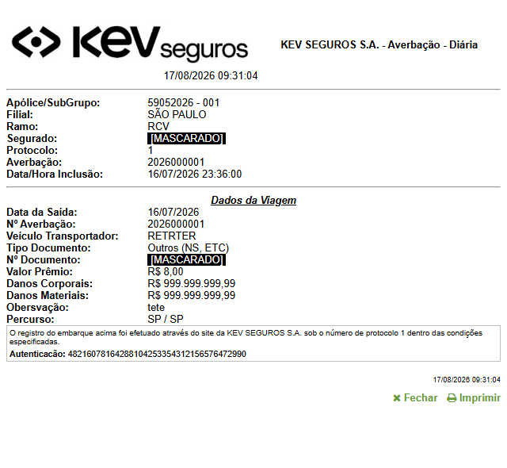
KEV SEGUROS S.A. no cabecalho e no rodape; campos Segurado/Nº Documento mascarados (repo publico)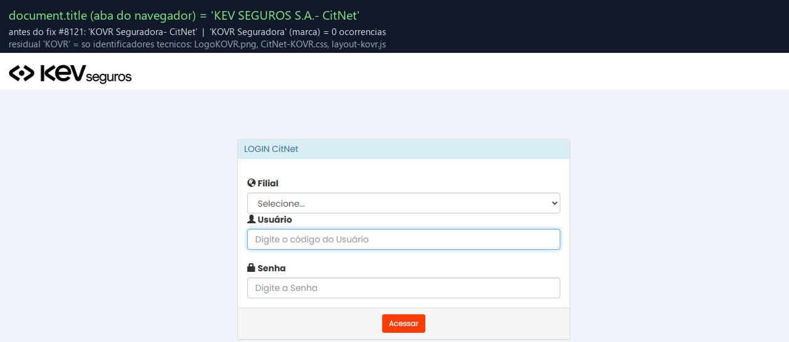
document.title = 'KEV SEGUROS S.A.- CitNet' pos-fixKEV SEGUROS S.A.. Mesma tela e mesma rodada (14/08) do CT-MRC-007
KEV SEGUROS S.A., mesma rodada (14/08) do CT-MRC-007KOVR Seguradora - Averbacao - Diaria. Esta superficie nao foi recapturada apos o fix — e a ressalva de cobertura deste CT, nao uma falha observadaid_seg = 1 e SUSEP 6921 preservados. Mesma medicao (13/08) do CT-MRC-009 — e o que impede o falso positivo "sumiu todo KOVR"Tipo
Negativo / exploratório · guiado pelo pedido explícito do card
| Critério de aceite | CT(s) que cobrem | Resultado |
|---|---|---|
| CA-01 — “Todos os locais citados devem contemplar a alteração de logo no formato que os prints indicam” | CT-MRC-001 (navbar) · CT-MRC-002 (protocolo) · CT-MRC-003 (relatórios) · CT-MRC-004 (certificados) · CT-MRC-005 (troca parcial) | 5/5 APROVADO — logo KEV nas 4 superfícies, sem estado misto |
| CA-02 — “Todos os locais citados devem contemplar a alteração do nome de KOVR e/ou KOVR Seguradora para KEV SEGUROS S.A.” | CT-MRC-006 (certificados, hardcoded) · CT-MRC-007 (relatórios, por fonte) ·
CT-MRC-008 (infoCliente) · CT-MRC-010 (caça-string) |
4/4 APROVADO após o fix do Bug #8121 — com ressalva no CT-MRC-010: a impressão do protocolo (a1/a2) não foi recapturada pós-fix |
| Implícito — troca cirúrgica, sem efeito colateral funcional (do refinamento técnico) | CT-MRC-009 (regressão do identificador técnico) | APROVADO — id_seg, SUSEP, base e chaves
técnicas inalterados; gravação funcionando |
Cobertura: 2 de 2 critérios de aceite cobertos, mais 1 critério implícito que o refinamento técnico torna explícito. 10 CTs — 6 P1, 4 P2.
| # | Risco | Probabilidade / impacto | Mitigação no plano |
|---|---|---|---|
| R1 | O logo do protocolo de averbação não muda, porque o código pede
.jpg e esse arquivo não está publicado (404 hoje) |
Alta / Alto — é um local do CA | CT-MRC-002 registra o HTTP dos arquivos junto da evidência; CT-MRC-005 compara as superfícies na mesma execução. Avisado no card antes da implementação |
| R2 | CT de nome passar pelo motivo errado, porque o banco já está com “KEV SEGUROS S.A.” | Alta / Alto — falso positivo silencioso | Foto pré-deploy obrigatória + CT-MRC-007 exige comparação antes × depois por saída |
| R3 | Caça-string reprovar implementação correta ao apagar “KOVR” de identificador técnico | Média / Médio — retrabalho e ruído | CT-MRC-010 classifica cada achado em marca × identificador antes de reportar; CT-MRC-009 protege o que não pode mudar |
| R4 | Cache de imagem simular “trocou” ou “não trocou” | Média / Médio | Comparação por md5 do arquivo servido, não por inspeção visual; cache furado em cada requisição |
| R5 | Marca antiga permanecer no ambiente /alfa/, que serve logo
diferente | Média / Baixo — ambiente de apoio | Declarado nos pré-requisitos; fora do escopo deste plano, sinalizado para o rollout |